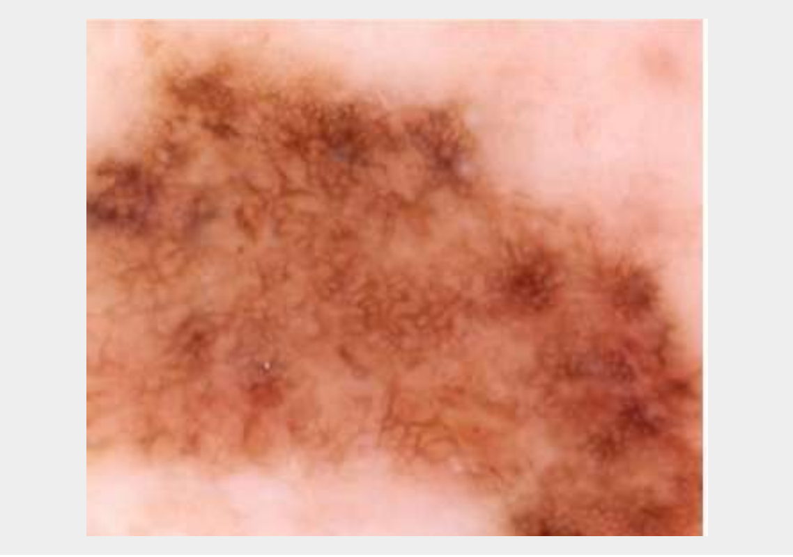
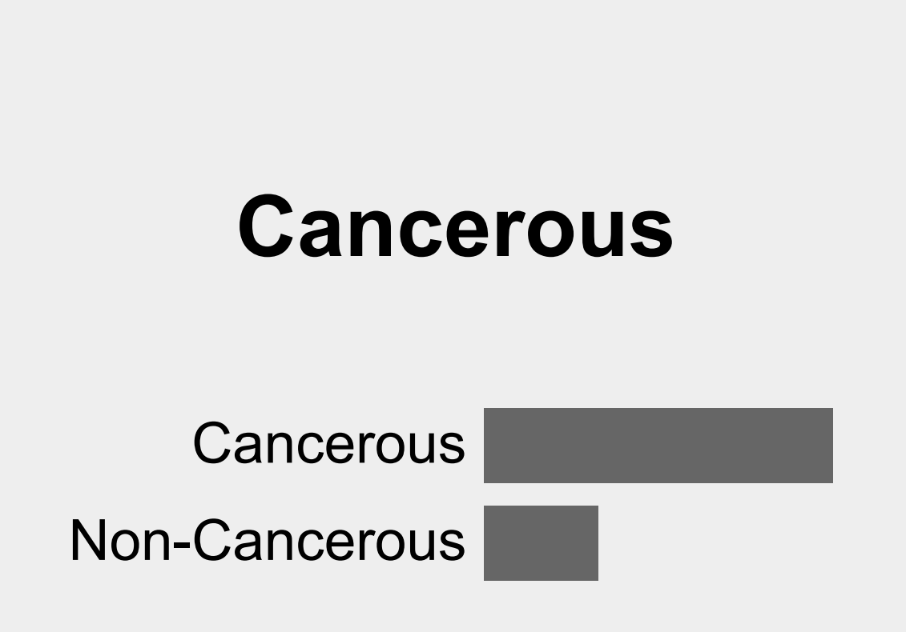

Popular Models -
Filter By Tag:
Skin Cancer Diagnosis
This model takes a skin surface image and determines, with probability, the likelihood the provided image is cancerous or noncancerous.
Works best with clear, direct images in neutral lighting.
Tags:


Pneumonia Colorizer
The Colorizer model takes an input body x-ray scan with pneumonia and highlights the regions by degree of infection.
Tags: